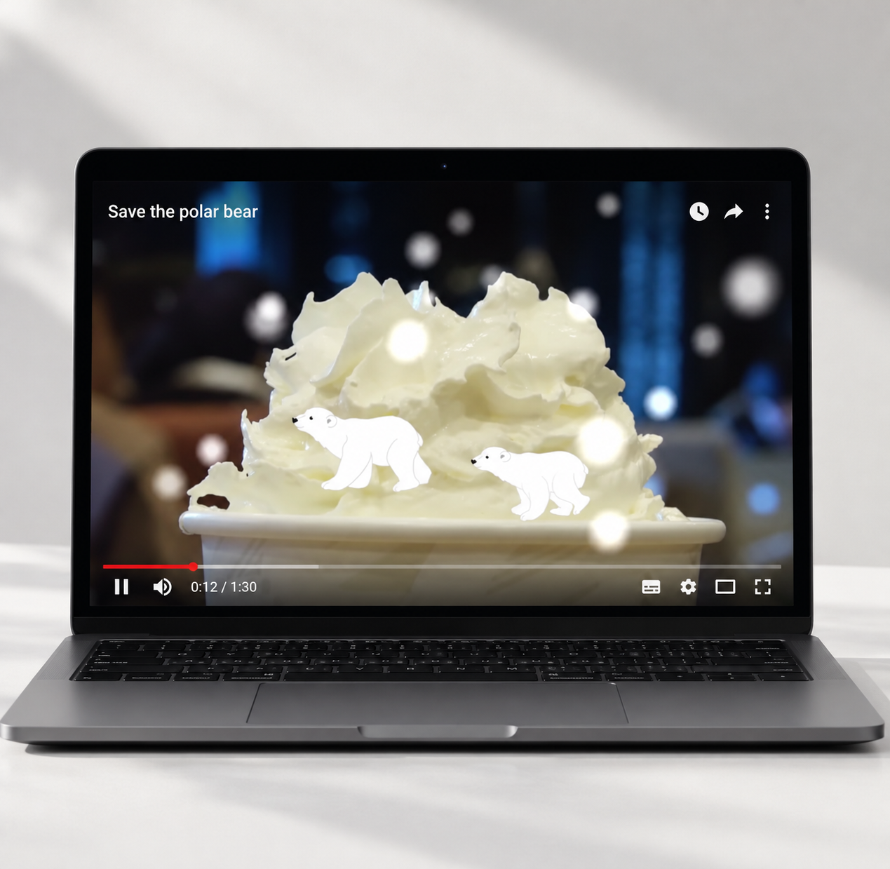

Motion & 3D
환경오염을 줄이고 북극곰 서식지를 보호하기 위해 일회용 컵 대신 유리컵 사용을 권장하는 광고 영상입니다.

PROJECT FOCUS
일회용 컵 사용으로 인한 환경 문제를 북극곰의 이야기로 쉽게 전달합니다.
일회용 컵 사용을 줄이고 유리컵을 사용하는 행동을 자연스럽게 제안합니다.
작은 생활 습관의 변화가 북극곰의 서식지를 지키는 시작이 될 수 있음을 보여줍니다.
A SMALL CHOICE